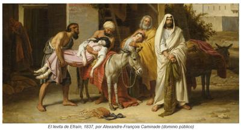

Los creyentes suelen repetir con orgullo que la Biblia es «la palabra de Dios», un manual de alta moralidad que debería ser enseñado a los niños en todas las escuelas. Sin embargo, basta con abrir el libro de los Jueces, capítulos 19 al 21, para encontrarse con una historia tan grotesca y cruel que, si fuera parte de cualquier otra obra de literatura, sería prohibida en los salones de clase. Y lo más irónico es que este relato no trata sobre los enemigos de Israel, sino sobre su propia población, la misma que según la Biblia fue elegida por «Dios» entre «todos los pueblos que están sobre la tierra» (Deuteronomio 7:6, Deuteronomio 14:2).


Si este el episodio hubiera tenido algún origen real, habría ocurrido entre los siglos XII y XI AEC, es decir, en el llamado «período de los jueces», antes del surgimiento de la monarquía de Israel (antes de Saúl y David). Sin embargo, como suele ocurrir con lo narrado por la Biblia, no hay ninguna evidencia histórica o arqueológica que confirme su veracidad. En todo caso, de ser un caso ficticio, juzguen ustedes el grado de morbosidad de la mente que creó el relato.
El protagonista es un «levita», es decir, un descendiente de Leví, un sacerdote israelita. Los levitas, según la Biblia, no tenían territorio propio como las demás tribus. Eran considerados un linaje «consagrado» al servicio del culto, y por eso vivían dispersos entre las otras tribus. Sin embargo, según Jueces 19:1, este levita en particular «moraba como forastero en la parte más remota del monte de Efraín», es decir, en territorio de la tribu de descendientes de Efraín, en la región montañosa del centro de Canaán.
Y este «siervo de Dios», aparte de tener aquella o aquellas mujeres a quienes consideraba sus esposas, también «había tomado para sí mujer concubina de Belén de Judá» (Levítico 19:1) —una mujer sin derechos, destinada a satisfacer los deseos sexuales de su amo— que era un privilegio que le concedía su estatus. Es decir, el sacerdote vivía en el norte de Israel (en Efraín), pero su concubina era del sur (de Judá).
Resulta que según el relato, un día «su concubina le fue infiel» (siendo que sólo él podía serlo), y él, en vez de apedrearla como lo ordenaba su dios (Levítico 20:10), dejó que se fuera «a casa de su padre, a Belén de Judá», donde permaneció «durante cuatro meses» (Levítico 19:2).
Pasado ese tiempo, el levita decide ir a buscarla para convencerla de que volviera a su hogar, por lo que el padre de la mujer se sintió tan contento, que lo persuadió de que permaneciera en su casa durante cinco días. Al sexto día el levita decidió regresar, tomando camino con su concubina hasta llegar a la población de Gaaba (Gibeá), habitada por miembros de la tribu de Benjamín (Jueces 19:3-15). Como no conocían a nadie en la ciudad, decidieron dirigirse a la plaza, donde «un hombre viejo que venía de su trabajo del campo al anochecer», les ofreció posada (Jueces 19:16).
Pero allí comienza la pesadilla. Después de comer, asearse y relajarse, unos hombres «perversos» de aquella ciudad (israelitas también, pero de la tribu de Benjamín) le exigieron al propietario de la casa que sacara a su huésped para que «lo conocieran», expresión que utiliza la Biblia con el significado de «tener relaciones sexuales» (Jueces 19:17-21). Salió entonces el dueño, y les rogó que no le hicieran eso a su invitado, ofreciéndoles a cambio a su propia hija virgen, además de la concubina de su protegido, para que ‘las conocieran’ mejor a ellas —a fin de cuentas, seres inferiores a los hombres— (Jueces 19:22-24).
Y así, para proteger su honor masculino —que era mucho más importante que cualquier honor femenino—, entregan a las mujeres a aquellos desenfrenados violadores, como si fueran desechos humanos. El levita arroja a su concubina a la turba, y los hombres abusan de ella «toda la noche hasta la mañana, y la dejaron cuando apuntaba el alba. Y cuando ya amanecía, vino la mujer, y cayó delante de la puerta de la casa de aquel hombre donde su señor estaba…» (Jueces 19:25-26).
¿Qué les parece? Y todo esto ocurría dentro del mismo pueblo favorito de «Dios». Pero al parecer esto no fue suficiente para interrumpir el sueño del levita, quien por la mañana, con una frialdad espeluznante, simplemente «abrió las puertas de la casa, y salió para seguir su camino; y he aquí la mujer su concubina estaba tendida delante de la puerta de la casa, con las manos sobre el umbral» (Jueces 19:27).
Él entonces se limita a cargarla sobre su asno para llevarla de regreso a casa, donde, sin un instante de compasión, «tomó un cuchillo» y «la partió por sus huesos en doce partes, y la envió por todo el territorio de Israel» (Jueces 19:29).
Sin embargo, aquel horrendo crimen cometido por el levita en contra de su concubina no fue lo que desató la ira de las demás tribus de Israel (elegidos por «Dios» como sus favoritos), sino la afrenta cometida por los benjaminitas de Gaaba (o Gibeá) en contra del levita (claro, las mujeres no valían nada para ellos). Por lo que deciden enviar uno de cada diez de sus hombres a aquella población para vengarse. Pero eso sí, antes le consultan a su dios «diciendo: ¿Volveremos a pelear con los hijos de Benjamín nuestros hermanos?» Ya lo habían hecho antes por otros motivos… «Y Jehová les respondió: Subid contra ellos» (Jueces 20:23). O sea, «Dios», dulce y amoroso, autorizó el enfrentamiento bélico entre miembros de su mismo pueblo elegido.
Resultado: murieron «veinticinco mil hombres» (Jueces 20:46). Pero además los vencedores, sin controlar su impulso pirómano, «pusieron fuego a todas las ciudades que hallaban» (Jueces 20:48). Sin embargo, este delirio no terminó ahí. Las tribus vencedoras prometieron además no tomar como pareja jamás a ninguna mujer de la tribu de Benjamín, para que ésta se extinguiera, «y dijeron: Cortada es hoy de Israel una tribu» (Jueces 21:6).
Sin embargo, en un momento dado las tribus vencedoras al parecer se arrepintieron de lo que habían hecho a sus hermanos benjaminitas, y de pronto se dan cuenta de que los habían dejado sin mujeres, y como pero ellos ya habían jurado no darles de las de ellos, se preguntaron: «¿Qué haremos en cuanto a mujeres para los que han quedado [vivos]? Nosotros hemos jurado por Jehová que no les daremos nuestras hijas por mujeres.» (Jueces 21:7).
Así que decidieron enviar hombres a otra población benjaminita, la de Jabes-galaad, con estas instrucciones: «Id y herid a filo de espada a los moradores de Jabes-galaad, con las mujeres y niños. Pero haréis de esta manera: mataréis a todo varón, y a toda mujer que haya conocido ayuntamiento [sexo] de varón» (Jueces 21:10-11). Es decir, dejando vivas sólo a las vírgenes.
Y así, después de derramar tanta sangre, decidieron entregar a los bejjaminitas sobrevivientes aquellas mujeres «que habían guardado vivas», pero como éstas no eran suficientes, «los ancianos de la congregación» decidieron que los hombres asistieran a la «fiesta solemne de Jehová en Silo, que está al norte de Bet-el», con estas instrucciones: «cuando veáis salir a las hijas de Silo a bailar en corros, salid de las viñas, y arrebatad cada uno mujer para sí de las hijas de Silo, e idos a tierra de Benjamín. […] Y los hijos de Benjamín lo hicieron así; y tomaron mujeres conforme a su número, robándolas de entre las que danzaban; y se fueron, y volvieron a su heredad, y reedificaron las ciudades, y habitaron en ellas.» (Jueces 21:16-24).
O sea, después de todo lo que antes habían hecho contra los benjaminitas, y de arrepentirse, las tribus vencedoras inventan dos «soluciones»:
1.Atacar Jabes-galaad (otra ciudad israelita) y matar a todos sus habitantes, excepto a las mujeres vírgenes, para entregarlas como esposas a los sobrevivientes de Benjamín (Jueces 21:10-12).
2.Como esas mujeres no alcanzaron, permiten que los benjaminitas rapten a las jóvenes que bailaban en una fiesta en Silo (Jueces 21:19-23).
Y todo esto, por el «honor ofendido» de un levita, no por el terrible crimen que él cometió en contra de su esclava sexual. ¿Se dan cuenta? Y todo, además, insistimos, ocurrió dentro del mismo pueblo elegido por «Dios» entre todos los «que están sobre la tierra» (Deuteronomio 7:6, Deuteronomio 14:2).
Por supuesto, nada de esto leen en las misas o los cultos evangélicos. Pero uno se pregunta: ¿Es éste el supuesto libro de alta moralidad que muchos cristianos quieren que los niños tengan en las aulas como un manual de alta moralidad? Una obra donde los sacerdotes son violadores, las mujeres son objetos y pueden ser repartidas y hasta despedazadas, donde la venganza es sagrada. Y donde ese «Dios» que aprueba esos actos barbáricos es presentado como fuente de amor y sabiduría. Si este relato se encontrara en la mitología de cualquier otro pueblo antiguo, los mismos creyentes lo tacharían de bárbaro y harían todo por censurarlo. Pero como proviene de su «Dios», le atribuyen gran valor «espiritual», y excusan su crueldad con frases como «eran otros tiempos».
A lo largo de los siglos, relatos como éste del levita y su concubina no sólo se aceptaron sin cuestionamiento, sino que moldearon silenciosamente la moral judeocristiana. En ellos se consolidó la idea de que la mujer era propiedad del varón, de que el honor masculino era superior a la vida humana, y de que la violencia era un instrumento legítimo de justicia divina. Tales valores, presentados como sagrados, impregnaron la cultura occidental, y aún persisten en la actualidad, disfrazados de «tradición» o «principios morales».
Pero el problema no es que existan estos relatos —toda civilización antigua tuvo sus mitos violentos—, sino que miles de millones de personas los sigan considerando la palabra inspirada de un ser perfecto, y los defiendan como modelo ético. Esa es la gran paradoja: venerar un texto que normaliza el 4buso, el genocidio y la subordinación femenina, pero que se le llama «sagrado».
Al final, tal vez la verdadera enseñanza de la historia del levita y su concubina no esté en su supuesto valor espiritual, sino en recordarnos hasta qué punto puede degradarse la moral humana cuando se somete al dogma religioso.
[Godless Freeman]
Comentarios
Comments powered by Disqus